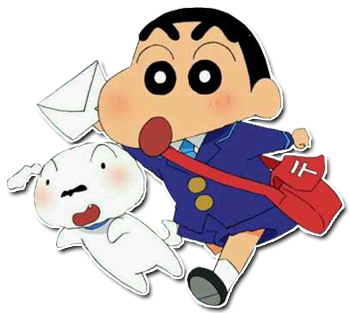

《짱구는 못말려》(일본어: クレヨンしんちゃん)은 1992년부터 현재까지 가장 현존하는 일본의 최장수 TV 시리즈 애니메이션이다. 애니메이션 제작은 신에이 동화에서 담당하였다.
1992년 4월부터 현재까지『주간 액션』에 연재 중인 故 우스이 요시토의 동명 만화 시리즈 『크레용 신짱』을 원작으로 하여 제작되었다. 2002년 5월 25일 방영분부터 디지털 작화 제작으로 전환되었고, 2005년 4월 22일 방영분부터 HD로 제작되기 시작하였다. 또한 2010년 6월 11일부터 16:9 HD급 고화질로 송출을 개시하였다. 2009년 9월 11일 원작자인 故 우스이 요시토가 사망하였으나 원작자는 총감독을 하고 작화는 애니메이터들이 하였기 때문에 사후에도 계속 제작 중에 있다.
대한민국은 1996년에 극장판 제2작이 VHS로 출시되며 먼저 소개되었고, TV 애니메이션은 1997년에 『97 신 짱구는 못말려』란 제목으로 VHS를 통해 최초로 공개되었다. TV 방영 역시 1998년에 SBS에서 극장판이 먼저 방영되었고 이후 1999년 6월 28일부터 SBS에서 주간시트콤으로 TV 애니메이션 방영이 시작되었다. CJ ENM(구) 온미디어의 자사 어린이 채널인 투니버스는 SBS 버전을 수시로 편성한 바 있고 (1, 2, 4, 6, 7기), 일부 시리즈에 대해선 당시 방영권을 SBS가 갖고 있어, 별도로 허락을 받아 방영하지 않은 부분을 더빙해 방영했다 (3, 5기). 2008년에 투니버스가 “짱구는 못말려 8”을 단독으로 더빙하게 되면서 독점 방영권을 갖게 되었고, 이로 인해 일부 성우진이 교체되었다. 이후 2014년 말~2016년 초에 과거 일본 "크레용 신짱" 스페셜분을 담은 "짱구는 못말려 X파일 (총 3 시즌)이 방영되었고 2016년 2월 "짱구는 못말려 2016 스페셜"을 방송하여 일본 "크레용 신짱"의 최신 스페셜분을 방영하였다. 또한 "짱구는 못말려 7"를 재더빙하여 2016년 3월 17일 첫 방송을 시작하였다. 2017년 7월 5일, "짱구는 못말려 17"를 방송 중이다. 2016년경 4:3 SD제작 방영분인 7기 ~ 10기를 16:9로 화면비율을 늘려서 HD로 재방영 하였다.
대한민국에서는 (구)㈜금강기획의 애니메이션 사업팀에서 아시아 지역 수출을 담당하는 일본 회사 애니메이션 인터내셔널(AI)로부터 구매하여 작품을 수입하였고, (구)㈜금강기획에서 (구)㈜애니 컨텐츠를 자회사로 설립 후에는 (구)㈜애니 컨텐츠에서 작품을 수입하였다. 이후 (구)㈜코코 엔터프라이즈에서 (구)㈜애니 컨텐츠를 인수하여, (구)㈜코코 엔터프라이즈에서 작품의 수입 및 라이센싱 사업을 진행하였다. (구)㈜코코 엔터프라이즈에서는 SBS와 계약을 체결한 후 작품 공급을 하다가, CJ ENM(구) 온미디어과 라이센스 독점 공급 계약 체결 후에 투니버스[1]에서 작품이 편성되고 있다.